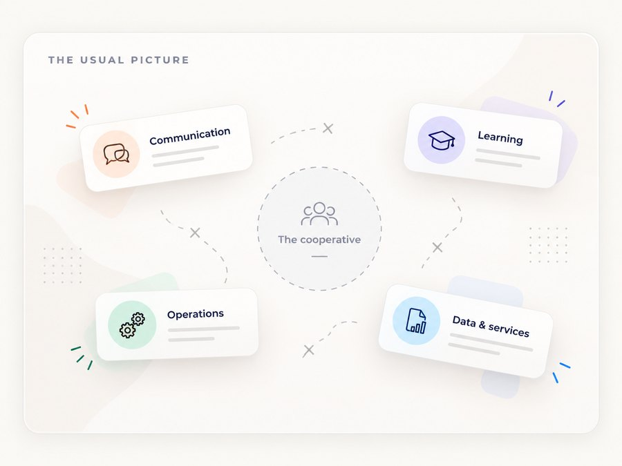
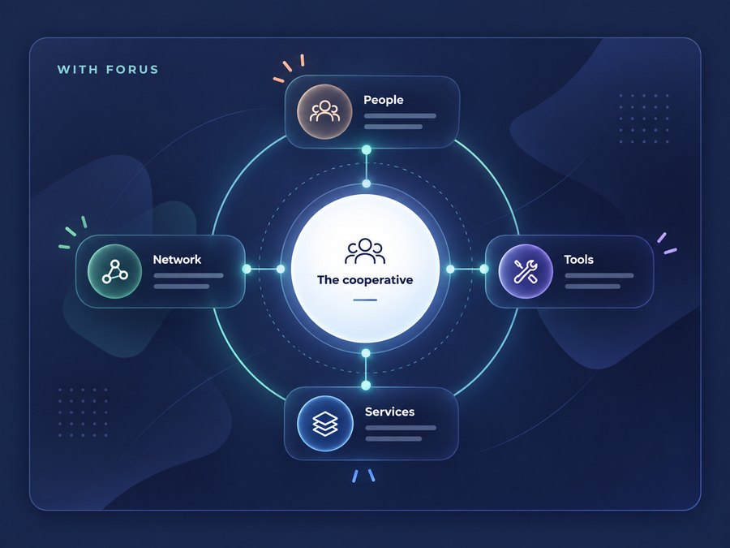

About FORUS
A cooperative building infrastructure for cooperatives.
FORUS Digital Cooperative is building shared digital infrastructure designed around cooperative ownership, participation and collective value.
It brings together the tools, services and connections cooperatives need to operate in a modern digital economy, without losing the principles that make them cooperatives.

- The digital infrastructure for the cooperative economy
- Built by a cooperative. Built for cooperatives.
- A registered South African primary co-operative
What FORUS is
One connected foundation for cooperative life.
FORUS is not one app or one software product.
It is a connected digital environment designed to support the wider cooperative journey, from bringing members together and building capability to coordinating activity, accessing services, participating in commerce and connecting to broader networks.
The experience should feel simple for the cooperative, even when the infrastructure underneath it is doing much more.
- Bringing members together
- Building capability
- Coordinating activity
- Accessing services
- Participating in commerce
- Connecting to broader networks
One environment across the whole journey, not a different system for each step.
Why FORUS exists
Cooperatives create value together.
Their infrastructure should too.
Cooperatives are built around shared needs, shared ownership and shared opportunity.
But the digital systems around them are often fragmented. Communication sits in one place. Learning in another. Operations somewhere else. Data and services may depend on systems that were never designed around the cooperative model.
FORUS exists to create a more connected foundation around the cooperative itself.
A place where people, tools and services can work together, and where the digital infrastructure strengthens the cooperative rather than pulling value away from it.



Built by a cooperative. Built for cooperatives.
The ownership model matters.
FORUS is itself a cooperative.
That means the platform is not simply technology being sold to cooperatives from the outside. It is shared infrastructure built around cooperative ownership, participation and collective value.
The tools are there to strengthen the cooperative and the people who belong to it.
The cooperative should not just use the infrastructure. It should be part of the ecosystem the infrastructure creates.
One cooperative ecosystem
Connected around the cooperative.
FORUS is designed so that different parts of cooperative life can work as one connected environment rather than a collection of disconnected systems.
- People
Members, leaders and the teams who do the work.
- Cooperative
One shared digital home for the cooperative itself.
- Tools and services
What the cooperative needs to organise, learn and operate.
- Network
Other cooperatives, partners and sector organisations.
- Opportunity
Learning, trade, services and shared value, reached together.
A wider network
Cooperation grows through connection.
No cooperative operates in isolation.
FORUS is designed to connect cooperatives with the organisations, services, sector networks and institutions that can help them participate more effectively in the wider economy.
As the ecosystem grows, those connections can extend beyond a single cooperative into broader networks of learning, trade, services and shared opportunity.

The cooperative
FORUS Digital Cooperative
A cooperative, registered and governed as one, building infrastructure for other cooperatives.
- Registered as
- A South African primary co-operative with limited liability, registered under the Co-operatives Act, 2013
- Legal name
- FORUS MEMBERSHIP COOP Primary Co-operative Limited
- Registration number
- 2022 / 603520 / 24

What we are working toward
A cooperative economy that is as connected digitally as it is powerful collectively.
We believe cooperatives should be able to connect their people, coordinate activity, build capability, access services and participate in wider economic networks through infrastructure designed around cooperative principles.
FORUS is being built to provide that shared digital foundation.
Bring your cooperative into FORUS.
Join a digital ecosystem built around cooperation, shared infrastructure and collective opportunity.